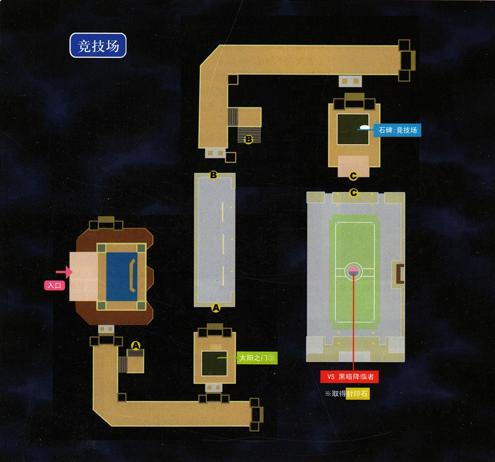
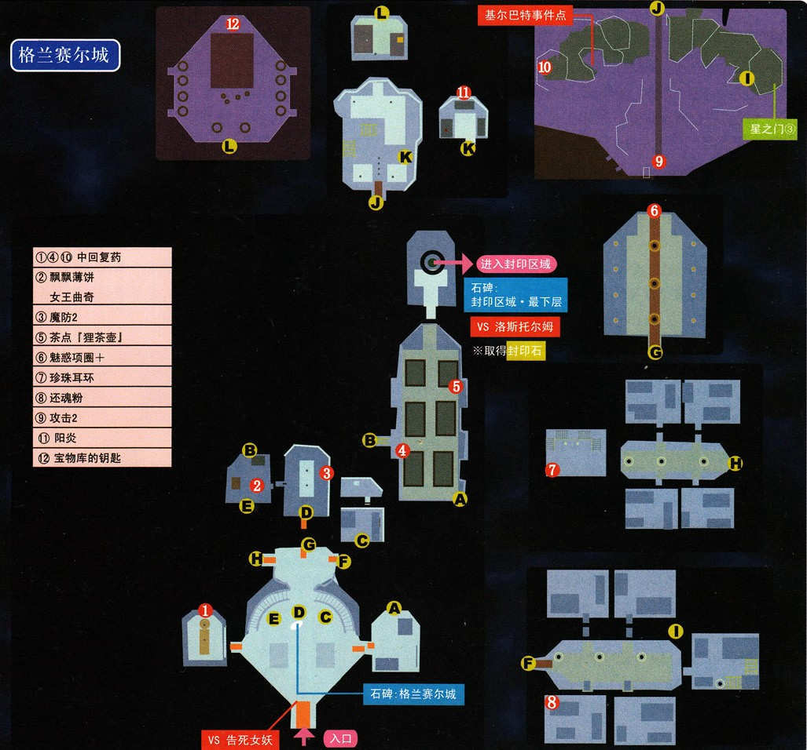

第二话 异界化王都
☆本话任意时间，前往书库找到发光点，就会得到书籍《红曜石》全套☆
翡翠回廊BOSS战后面的位置出现了传送阵，经过传送阵就会进入第二话的舞台——利贝尔王国国都格兰赛尔。
{kind=link}
现在还只能进入南街区和北街区，按地图把所有的宝箱收集好（有一些重要的回路和装备），调查一下月之门②和太阳之门②（现在还都进不去），调查一下南街区的石碑（今后每当地图中出现新的石碑和门请尽快调查，我就不再提示了），接着就向北进发，调查完星之门①之后到了王城门口，跟门口的魔兽战斗（此战敌人数量较多，攻击力很高，建议开场放S技秒杀周围的小怪，之后集中精力打中间的钢枪王者，也可以用提妲的烟幕弹把周围小怪致盲之后逐个歼灭）。战斗后南街区通往东街区的结界解除。
在东街区进入帝国大使馆就会进入强制战斗，敌人会蓄力之后释放有即死效果的"胧"，一定要打断。战斗后获得新的封印石，将附近的宝箱收集好之后回到据点解封，穆拉加入，北街区通往东街区、西街区的结界解除。如果是PC版的玩家，这是穆拉第一次成为可控角色，穆拉拥有着全队数一数二的物理攻击力，平时依靠普通的物理攻击就能造成巨大的伤害。穆拉加入之后，编队系统开启，援护系统开启，在据点里面点击屏幕左上角就能进行编队了。同时星之门①可以进入了，把穆拉和尤利娅编入队伍就能进入星之门①了。PSP玩家注意，在PSP版中尤利娅和穆拉的战斗力有了不小的提升，主要是战技消耗CP变少，硬直时间变短，效果增强等等。
【星之门①】带尤利娅和穆拉进入，奖励3000mira和回路耀脉。 点击查看详解
{kind=link}
接着进入西街区。收集宝箱、调查星之门②之后向码头进发，在码头东北角仓库内发生强制战斗（敌人弱风、同时物理防御力比较低，直接砍死就行了），战斗后获得山猫号的钥匙，接着就能进入停靠在码头最南部的山猫号了，在山猫号内获得封印石，回到据点解封，乔斯特加入，王立竞技场入口结界解除。乔斯特的战斗能力比较中庸，但是用来当援护角色却能大幅提升物品掉落率，在晶片紧张的3rd里面这个援护功能确实极为重要。乔斯特加入之后，太阳之门①就能进入了。
【太阳之门①】带即可乔斯特进入，奖励3000mira和回路探知点击查看详解

进入王立竞技场。竞技场内有石碑，在这里进行调整，接下来战斗中敌人会用全体攻击，所以至少有一个人要回"回复术·复"等回复系魔法。继续前进是三联战，前两战都是杂兵级战斗，敌人也都在之前遇到过，注意每一战结束HP、EP不会回满，所以第二战的最后一击之前最好把全员的HP、EP、CP都攒够。第三战BOSS周围的小怪死后会自爆，因此不要离得太近，此战敌人弱时属性。战斗后获得封印石，解封后，空之轨迹FC、SC的男主角约修亚加入，格兰赛尔王城大门的结界解除。约修亚的物理攻击力、魔法能力、战技等等都很优秀，这个玩过FC尤其是SC的同学们一定深有体会，此后相当长的时间里面，约修亚都可以作为队伍的主要战斗力参战。
接下来向王城进发，此时队伍中必须带尤利娅（毕竟人家是亲卫队队长，职责所在= =）才能进入王城。进入后发生剧情战，敌人弱火。王城内宝箱很多，路上会遇到基尔巴特，看样子这个人也进入了异空间，在寂寞的异空间之旅中，基尔巴特是我们仅有的能看到的NPC了，也是重要的乐趣来源，所以今后还会多次营救此人。救完基尔巴特之后进入女王宫，在阳台上会得到"宝物库的钥匙"。女王宫内会得到回路"阳炎"，任意一名战斗角色戴上之后走迷宫躲怪会方便很多。

拿着钥匙打开地下一层宝物库大门，通过电梯进入封印区域，一直前进很快就能看到终点的石碑了。本话BOSS战难度不是很大，开场在尤利娅"号令"之下使用约修亚的S技幻影奇袭清理周围的小怪（小怪们会给BOSS回复HP），接着集中火力就能消灭BOSS了，BOSS会驱动"炼魔咆哮"，提升自己的STR，因此最好在驱动时打断。战斗后获得新的封印石，第二话结束。
{kind=link}